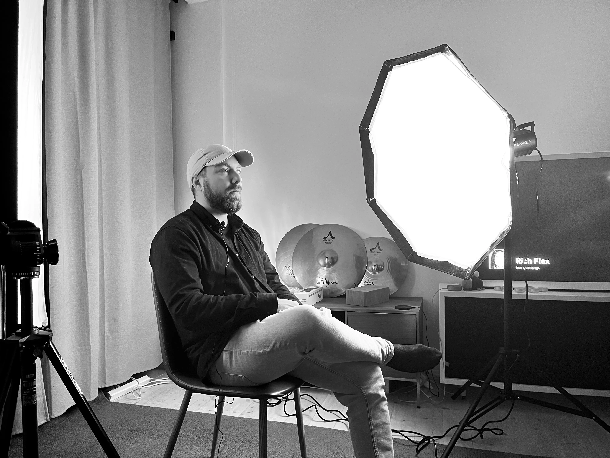

Produceret af:
Siff Kongsted Lund
Sophia Cabrera Lavigné
Kassandra Annika Wadum
Katrine Bang Nielsen

PASSION: Fotografering
AT FANGE ØJEBLIKKE
“Det der med at komme ud og opleve nogle events, eller nogle mennesker, eller nogle miljøer, synes jeg er fedt”